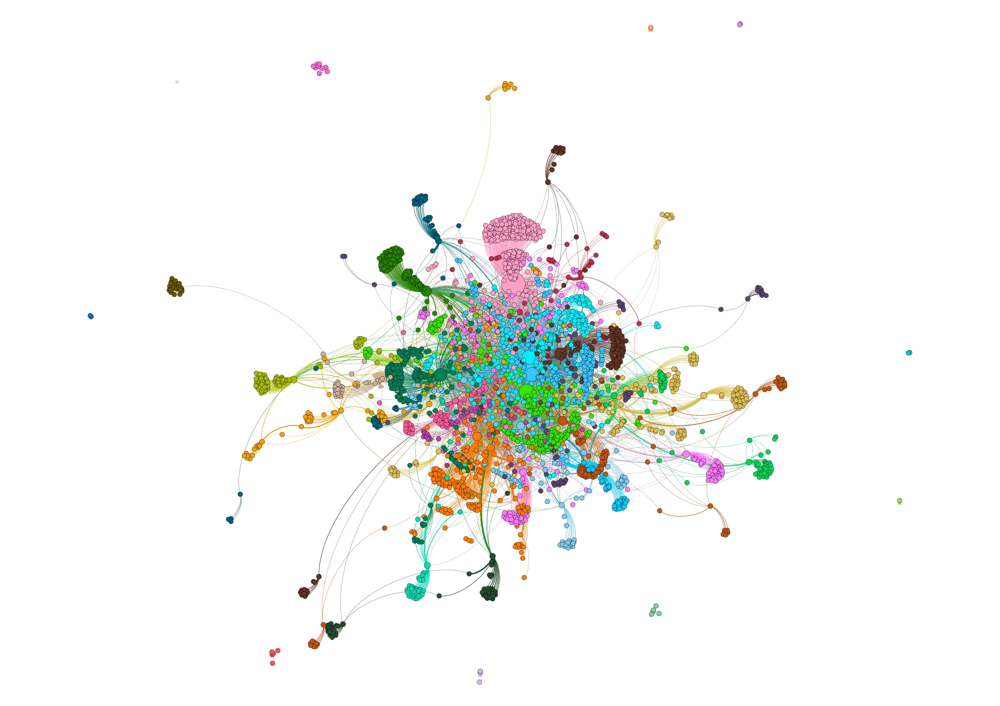

<!DOCTYPE html PUBLIC "-//W3C//DTD XHTML 1.0 Transitional//EN" "http://www.w3.org/TR/xhtml1/DTD/xhtml1-transitional.dtd">
<html xmlns="http://www.w3.org/1999/xhtml">
<head><meta charset="utf-8">
</head>
<body></body>
</html>
<p><br />
<title>Research</title>
<!-- Bootstrap core CSS --></p>
<link href="css/bootstrap.css" rel="stylesheet" /><!-- Documentation extras -->
<link href="css/docs.min.css" rel="stylesheet" />
<link href="css/custom.css" rel="stylesheet" /><!-- HTML5 shim and Respond.js IE8 support of HTML5 elements and media queries --><!--[if lt IE 9]>
    <script src="../assets/js/html5shiv.js"></script>
    <script src="../assets/js/respond.min.js"></script>
    <![endif]--><!-- Favicons --><!-- Place anything custom after this. -->
<p><a class="sr-only" href="#content">Skip navigation</a> <!-- Docs master nav --></p>

<header class="navbar navbar-inverse navbar-fixed-top bs-docs-nav" role="banner">
<div class="container">
<div class="navbar-header"><button class="navbar-toggle" data-target=".bs-navbar-collapse" data-toggle="collapse" type="button"><span class="sr-only">Toggle navigation</span></button><a class="navbar-brand" href="index.html">Home</a></div>

<nav class="collapse navbar-collapse bs-navbar-collapse" role="navigation">
<ul class="nav navbar-nav">
	<li class="active"><a href="research.html">Research</a></li>
	<li><a href="courses.html">Courses</a></li>
	<li><a href="talks.html">External Talks</a></li>
	<li><a href="other.html">Other Stuff</a></li>
</ul>
</nav>
</div>
</header>
<!-- Docs page layout -->

<div class="bs-docs-header" id="content">
<div class="container">
<h2>Research</h2>
</div>
</div>
<!-- Callout for the old docs link -->

<div class="container bs-docs-container"><!-- Global Bootstrap settings
    ================================================== -->
<div class="bs-docs-section"><!-- <h1>Research</h1> 
    <hr>    -->
<div class="container bs-docs-container">
<div class="bs-docs-section">
<h3>Cancer Drug Response Prediction</h3>
</div>
</div>

<div align="" class="panel panel-default container">

<p>I am currently a part of <a href="http://maslov.bioengineering.illinois.edu/">Sergei Maslov</a>&#39;s&nbsp;lab where I work on a <a href="https://www.anl.gov/article/cancers-big-data-problem">project</a>&nbsp;at Argonne National Lab on using machine learning for cancer drug response prediction. My niche in this project is interpretable machine learning models that can be used to understand cancer biology in addition to predicting drug response.</p>
</div>

<h3>Computing the Language of Life</h3>
</div>
</div>

<div align="" class="panel panel-default container">
<figure></figure>

<p>In collaboration with&nbsp;&nbsp;<a href="http://markandrewhopkins.com/">Mark Hopkins</a> (Reed C.) and <a href="https://www.reed.edu/biology/ritz/">Anna Ritz</a> (Reed C.), I am currently studying the use of machine learning in predicting the function of proteins based on the primary sequence alone. Focus is on treating protein sequences as a language and adapting ideas from natural language processing to learn biologically relevant features of proteins.&nbsp;</p>
</div>

<div class="container bs-docs-container"><!-- Global Bootstrap settings
    ================================================== -->
<div class="bs-docs-section"><!-- <h1>Research</h1> 
    <hr>    -->
<h3>Evolution &amp; Classification of Technology</h3>
</div>
</div>

<div align="" class="panel panel-default container">
<figure></figure>

<p>Collaborating with&nbsp;&nbsp;<a href="http://people.reed.edu/~mab/">Mark Bedau</a> (Reed C.),&nbsp;<a href="https://protolife.com/people">Norman Packard</a> (ProtoLife) and <a href="https://www.inet.ox.ac.uk/people/j-doyne-farmer/">Doyne Farmer</a> (Oxford), I am currently working on two different projects&nbsp;studying the evolution of&nbsp; real non-biological systems using patent records and financial report forms. The first project involves studying an evolving classification&nbsp;of technology while the other aims to predict the dynamics of technological ecosystems.&nbsp;</p>
</div>

<div class="container bs-docs-container"><!-- Global Bootstrap settings
    ================================================== -->
<div class="bs-docs-section"><!-- <h1>Research</h1> 
    <hr>    -->
<h3>Controllability of Complex Networks</h3>
</div>
</div>

<div align="" class="panel panel-default container">
<figure></figure>

<p>In 2017, under the supervision of <a href="https://www.santafe.edu/people/profile/sanjay-jain">Sajay Jain</a> (U. Delhi &amp; Santa Fe Inst.) at the Department of Physics and Astrophysics at the University of Delhi, I explored the controllability of complex networks. Specifically, I studied the role of metabolites in the controllability of the E.coli genetic regulatory network. I also studying the target controllability of different functional classes of E. coli genes and the relationship between the target controllability and the function of the class of genes.</p>

<p>I presented results from this project as a poster at the <a href="https://www.siam.org/Portals/0/Conferences/AN18/AN18%20Program%20Book%20AND%20Abstracts%20(UPDATED).pdf?ver=2018-07-26-115459-590">2018 SIAM Annual Meeting</a> and as a research talk at the 2018 Pacific Northwest Quantitative Biology Symposium.</p>
</div>

<div class="container bs-docs-container"><!-- Global Bootstrap settings
    ================================================== -->
<div class="bs-docs-section"><!-- <h1>Research</h1> 
    <hr>    -->
<h3>An Analysis of Pro-Terrorist Users on Twitter</h3>
</div>
</div>

<div align="" class="panel panel-default container">
<figure></figure>

<p>At the end of my Freshman year, I applied the theory of complex networks to terrorist networks on social media under the supervision of <a href="https://umexpert.um.edu.my/kuru.html">Kurunathan Ratnavelu</a> (U. Malaya) at the Institute for Mathematical Sciences. The data used for this project was compiled by Fifth Tribe, a digital agency based out of Washington DC. I found that the network of pro-terror twitter users studied could be described by a scale-free model. I then studied the effect of selectively deleting nodes on the network as a whole.</p>

<p>Preliminary results on the structure of the network and the effect of selectively removing nodes were presented to faculty members of the Institute of Mathematical Sciences. A report was also submitted to the Institute.</p>
</div>
<!-- Footer
    ================================================== -->

<footer role="contentinfo" style="margin-top:40px">
<div id="footer">
<div class="well well-sm">
<div class="container">
<div class="row">
<div class="col-md-2">
<h4>Get in touch!</h4>
</div>

<div class="col-md-6">
<h4>E-mail me at: annambiar [at] reed [dot] edu</h4>
</div>
</div>
</div>
</div>
</div>
</footer>
<!-- JS and analytics only. --><!-- Bootstrap core JavaScript
    ================================================== --><!-- Placed at the end of the document so the pages load faster --><script type="text/javascript" src="js/jquery.min.js"></script><script type="text/javascript " src="js/bootstrap.min.js"></script><!-- <script type="text/javascript " src="js/application.htm"></script>
<script type="text/javascript " src="js/run_prettify.htm"></script>
--><!-- Analytics
    ================================================== -->